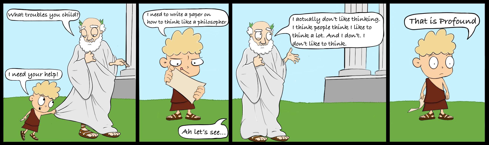

About Me
A little about who I am.
Hey stranger! I'm Zach. I’m just an honest guy who likes to make people laugh and provoke imagination. I do my best to approach problems with curiosity, empathy, and a supportive attitude. I also work well within cross-functional teams thanks to my wide range of experience and interests. I'm a juggler, drummer, and inventor!
1979 Ford Bronco Restoration
In the summer of 2015 I decided that I wanted to learn about cars. Instead of watching youtube videos or reading a book, I gathered my savings and purchased a beat-up 1979 Bronco.
With the help of friends, family, and online resources, I restored the Bronco. I replaced the suspension, electrical, and interior. I believe hands-on learning is most effective.

Graphic Design
I enjoy art and design as a hobby. I like drawing cartoons and occasionally I create logos for friends and family.
Case Study: